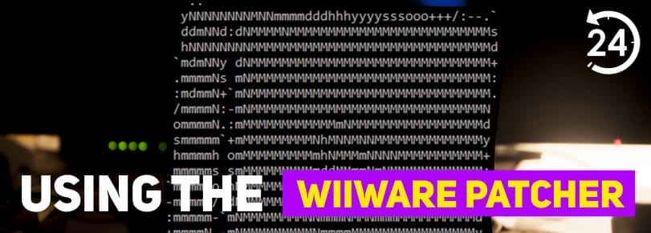
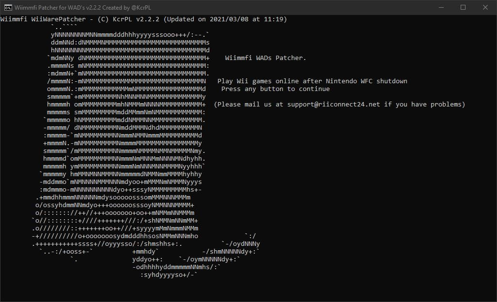
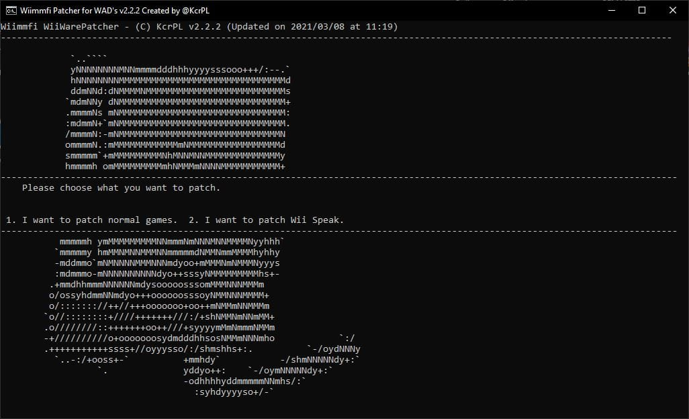
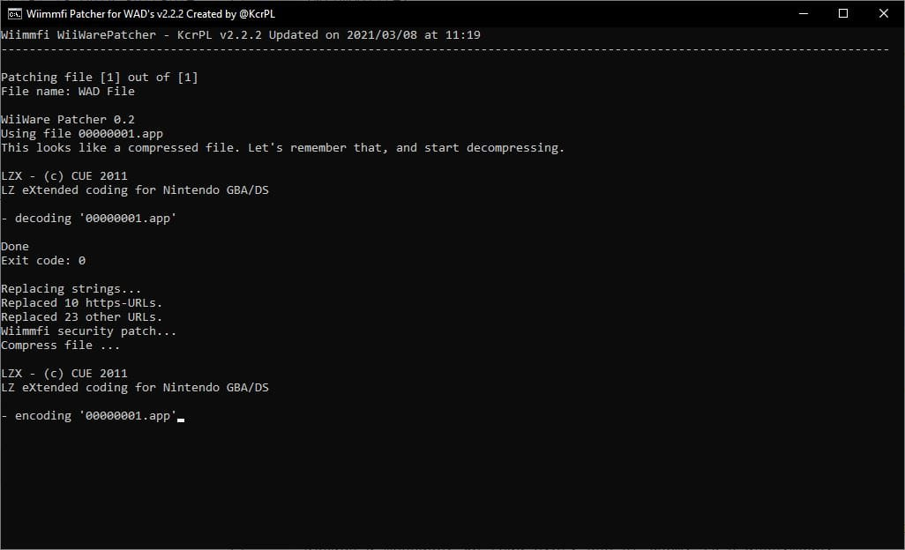

WiiWare Yamalayıcısı
İngilizce destek için, RiiConnect24 Discord'dan yardım isteyebilirsiniz.
WAD oyunlarının (WiiWare) Wiimmfi ile çalışmasını istiyor ama nasıl yapılacağını bilmiyor musunuz? Bu öğretici size WiiWare Yamalayıcısı’nın nasıl çalıştığını açıklayacak. (Bu öğretici yalnızca Windows işletim sistemi ile uyumludur)

Bu öğretici yalnızca WiiWare Yamalayıcısı’nın Windows sürümünü kapsar.
İhtiyacınız olan şeyler
- Windows bilgisayar
- WiiWare Yamalayıcısı
Bölüm I - WiiWare Yamalayıcısı’nı İndirmek
- Yukarıdaki linke tıklayarak yamalayıcının bulunduğu GitHub sayfasına ulaşın.
WiiWarePatcher.batuygulamasını indirin.
Bölüm II - WiiWare oyunlarını yamalama
- Windows’da
WiiWarePatcher.batuygulamasını çalıştırın.  - Yamalayıcıyı açmak için herhangi bir tuşa basın.
- Oyunlarını yamalamayı veya
Wii Speak Channel‘ı indirip yamalamayı seçin.  - Eğer oyunlarınızı yamalıyorsanız, onları (.WAD dosyalarını)
WiiWarePatcher.batuygulamasının bulunduğu klasöre taşıyıp1’e ardından ENTER’a basın. - Yamalama işlemi başlayacaktır. Sabırlı olun. 
- Bitti! Yamalanmış WAD’ dosyalarını,
wiimmfi-wadsklasöründen bulabilirsiniz. Dosyaları Wii Mod Lite veya başka bir WAD Yöneticisi ile yükleyebilirsiniz.